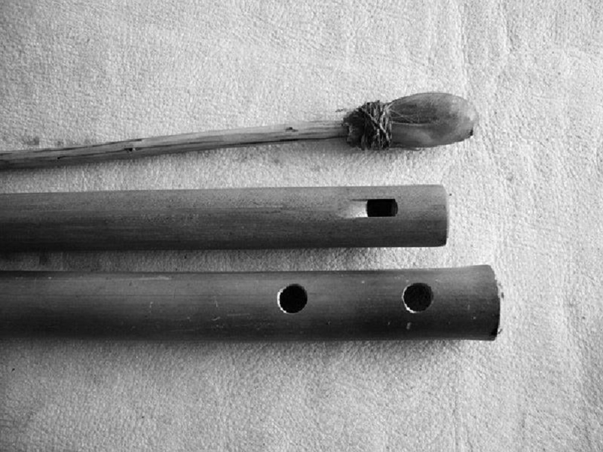

Pinkillo and Tinya
Note 037
Home > Blog A Musician's Log > Note 037
One hand for the flute, one for the drum
An Andean musician plays a small flute with the left hand while the right hand strikes a drum. The arrangement is familiar from Iberian traditions of flauta y tamboril, in which a three-hole duct flute allows a single performer to produce both melody and percussion.
Historical instruments demonstrate the longevity of this practice. The Musical Instruments Museum in Brussels preserves a wooden tabor pipe excavated in Reimerswaal, in the Netherlands, dating from the fifteenth to seventeenth centuries. Its two front fingerholes and rear thumbhole permit one-handed playing, leaving the other hand available for the drum.
Comparable arrangements exist in the Andes. They are particularly well documented in Ecuador, where the pingullo and drum are played together by musicians known as pingulleros, tamboneras, mamacos, and other regional names.
In Peru, certain forms of pinkullo are likewise performed together with the tinya drum. However, the terminology, instrument construction, and distribution of musical responsibilities vary considerably. Not every Andean pinkillo is designed for one-handed playing, and the presence of a flute and drum in the same musical tradition does not necessarily mean that one person plays both.
The pinkullo and tinya in Huancavelica
A particularly useful description appears in Chopccam Kani: Música tradicional chopcca, published by Peru's Ministry of Culture in 2014.
The publication documents musical practices among the Chopcca communities of Huancavelica. Its description of the pinkullo concerns an instrument traditionally made from wood or cane, although contemporary examples recorded for the project were manufactured from PVC.
These flutes have three fingerholes: two near the lower end and one on the back. They are held and played using the index finger, middle finger, and thumb of the left hand. The right hand remains free to strike the tinya or caja.
The tinya is a double-headed drum traditionally made with animal skin. It accompanies different musical activities, including festivities associated with livestock marking and the vigawantuy, the communal transportation of large wooden beams.
The documentation also identifies distinctions in who plays the drums. Although the recorded performances involved men, it notes that women traditionally played the tinya during livestock-marking celebrations or while accompanying their own singing.
The authors emphasize that combinations of pinkullo and tinya are not distributed uniformly throughout the Peruvian highlands. They describe the pairing as common in the northern sierra but relatively exceptional in the southern and south-central regions.
The Ecuadorian pingullo
In Ecuador, the simultaneous performance of flute and drum is particularly prominent in several regional celebrations.
Johny García Coque's research on the Ecuadorian pingullo documents variations in instrument construction, fingering, ensemble organization, and performance technique.
The most widespread models have three fingerholes, two on the front and one behind. Other instruments differ in length and number of holes, demonstrating that the name pingullo does not identify one standardized design.
Among the Danzantes of Cotopaxi, musicians known as tamboneras accompany celebrations associated with Corpus Christi and Inti Raymi. García describes instruments approximately forty centimetres long, played together with substantial drums.
In some localities, two or more tamboneras perform in coordinated groups. Their flutes may produce separate melodic parts, including intervals of thirds and sixths. The arrangement is therefore not necessarily limited to a solitary musician providing a melody and a simple rhythmic accompaniment.
The instruments are associated with particular dances and local repertoires, and their performers acquire specialized knowledge of those musical practices.
García's later study, Pingullo y tambor: Mamacos, tamboneras, chimbuceros y otros, documents the variety of regional names applied to this instrumental combination and its performers.
Different flutes, different possibilities
The diversity of instruments grouped under names such as pinkillo, pinkullu, and pingullo is important.
Some are relatively small flutes whose fingerholes permit one-handed playing. Others are much longer instruments with five or six fingerholes, requiring a different playing technique.
Documentation from Cusco describes large pinkuyllus associated with carnival celebrations, including examples approximately 1.30 metres long with six widely spaced fingerholes. These instruments cannot simply be treated as equivalents of the small three-hole flutes used with drums.
Even where the same general type of duct-flute construction is involved, differences in length, fingering, and tuning affect the available musical possibilities. The accompanying percussion also varies. The small tinya documented in Peruvian traditions should not automatically be equated with every drum accompanying a pingullo in Ecuador.
Consequently, the useful unit of comparison is not an abstract pairing called pinkillo and tinya, but a particular set of instruments played by identifiable musicians in a documented performance tradition.
The European comparison
The resemblance between some Andean practices and the European pipe-and-tabor is substantial.
Both can employ a small duct flute whose limited number of fingerholes makes one-handed playing possible. Both allow a musician to combine a melodic part with percussion while remaining mobile, an arrangement particularly suited to accompanying processions and dances.
The European tradition has an extensive historical record. Instruments, illustrations, and written descriptions document its presence from the Middle Ages onward. It also survived in several regional traditions, including the Basque txistu and tamboril.
The history of the Andean arrangements is more difficult to establish. Spanish colonial expansion undoubtedly brought European musical instruments and performance practices into contact with Indigenous American traditions. But the existence of similar instruments and playing arrangements does not, by itself, demonstrate that a particular Ecuadorian or Peruvian practice descended directly from European pipe-and-tabor playing. Establishing such a relationship would require more specific historical documentation concerning instrument construction, performance technique, terminology, and the transmission of musical practices.
What can already be documented is more interesting than a general assertion of similarity: in Huancavelica, certain three-hole pinkullos are played with tinyas during particular communal celebrations; in Cotopaxi, pingulleros and tamboneras maintain different combinations of flute, drum, dance, and coordinated instrumental parts.
Those are the musical practices that a historical comparison needs to explain.
Readings
- Aranburu Urtasun, Mikel. 2012. "El txistu y el tamboril en Navarra." Cuadernos de Etnología y Etnografía de Navarra 87: 5–69.
- García Coque, Johny. 2016. "Apreciaciones generales con respecto a la organología y las técnicas de interpretación del pingullo: El pingullo ecuatoriano." Traversari 2: 26–35.
- García, Jhony. 2024. "Pingullo y tambor: Mamacos, tamboneras, chimbuceros y otros." Edosonía 3 (2): 6–16. Issue dated 2022; published online April 9, 2024.
- Musical Instruments Museum, Brussels. n.d. "Tabor Pipe." Wind Instruments Collection, object 1983.049. Excavated at Reimerswaal, Netherlands; fifteenth–seventeenth century.
- Proyecto Qhapaq Ñan and Ministerio de Cultura del Perú. 2014. Chopccam Kani: Música tradicional chopcca. 2nd ed. Serie Música e Identidades, 1. Lima: Ministerio de Cultura.